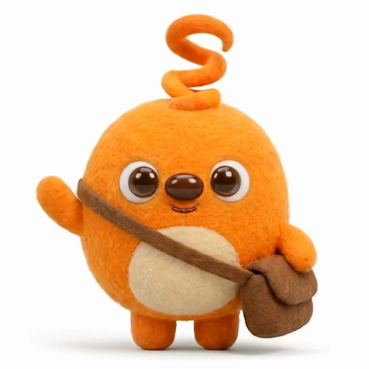
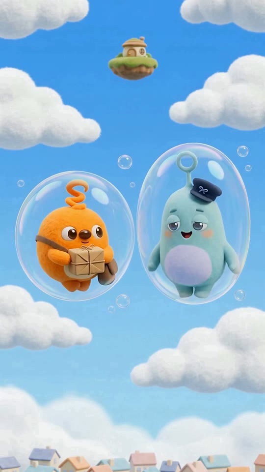
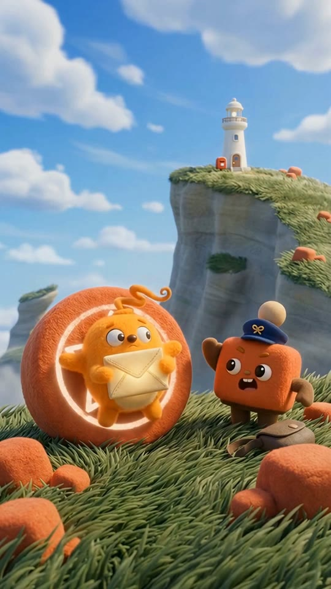
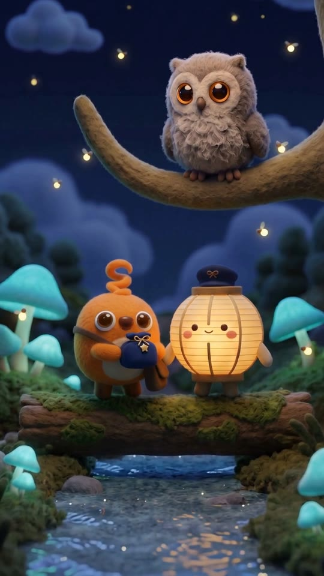

想いを届ける、宇宙配達員。くしゃみをすると、どこへでもひとっとび！
A tiny space courier who carries everyone's feelings. One sneeze — and he's there!

宇宙郵便局の配達員。ふわふわで、ちょっとおっちょこちょい。
A fluffy, slightly clumsy courier at the Space Post Office.
くしゃみをすると、光になって届け先へ瞬間移動！
When he sneezes, he turns into light and teleports to the delivery!

毎回、ちがう配達員といっしょに、ふしぎな星へおとどけ。
Each episode, a new courier friend joins him on a delivery to a wondrous world.


毎週日曜20時に新しいおはなし。/ New episode every Sunday, 8 pm (JST).